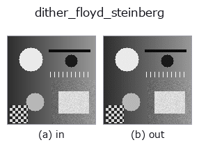

gray op• Data kinds: image → image
• Call: fullseye.apply(img, "dither_floyd_steinberg", a=0.5, b=0.5) (2-D model = एक image + दो scalar knobs a,b∈[0,1])

*Figure synthetic 128×128 input पर सच में चलाकर मिला output है। बाईं ओर input, दाईं ओर output। Point clouds ऊपर से देखे गए scatter के रूप में (brightness = z), 1-D series line के रूप में, volumes z दिशा में maximum-intensity projection के रूप में, videos बीच के frame के रूप में, complex images amplitude के रूप में, और जो return values चित्र नहीं बन सकते वे स्वयं values के रूप में दिखाए जाते हैं।*
Knob a को बदलकर (0.1 / 0.5 / 0.9, दूसरा knob default पर):
▸ dither_floyd_steinberg: knob a को बदलने का figure (docs site)
*Knob b output नहीं बदलता (मापा गया: 0.1 / 0.5 / 0.9 पर एक जैसा)।*
दूसरी images पर भी (synthetic scene / photo / coins। ऊपर की row में inputs, नीचे की row में उनके outputs। Knobs default पर):
▸ dither_floyd_steinberg: दूसरी images पर output (docs site)
*चौथा column colour (H,W,3) input है। यह op channels को पार किए बिना colour संभालता है (colour channel को तीसरे spatial axis की तरह convolve नहीं करता)।*
Error diffusion dither (Floyd–Steinberg)। a bit की संख्या 1 से 8 है, b इस्तेमाल नहीं होता।
हर pixel को round करने के बाद, निकले error को दाईं ओर 7/16, नीचे-बाईं ओर 3/16, नीचे 5/16, नीचे-दाईं ओर 1/16 बाँटा जाता है। mean बना रहता है (स्थानीय रूप से जोड़-घटाव संतुलित होते हैं), इसलिए flat gradation धारियाँ नहीं बनती, बल्कि बिंदुओं के घनत्व से दिखाई जाती है। 1 bit तक घटाने पर भी तस्वीर पढ़ी जा सकती है, इसका कारण यही है।
लागू होने की शर्तें: (1) scan order पर निर्भर है, इसलिए image को crop करने की position बदलने से result बदल जाता है — tile processing या parallelisation के लिए उपयुक्त नहीं (उसके लिए dither_ordered)। (2) error पड़ोसी pixel को भेजा जाता है, इसलिए पतली रेखाओं के आसपास पूँछ बनती है। (3) यहाँ सीधा sequential implementation है, इसलिए बड़ी image पर यह dither_ordered से बहुत धीमा है।
• gallery2d_gray_arith family guide
• Sample data catalog (DL URL / license) — 2-D के लिए skimage.data (BSD/public) + synthetic, 3-D के लिए real data sources (Stanford/PDS आदि) के DL URL।
• Operators का स्रोत और संदर्भ — इस op family के मूल research/methods के स्रोत।
• Algorithm का मानक स्रोत (लेखक, वर्ष) और उपयोग ऊपर की family usage guide में दिए गए हैं।
नीचे का program सच में चलता है, यह जाँचा गया है (figure वाला ही input)। Studio की help में यह block buttons बन जाता है, जिनसे इसे वहीं load करके चलाया जा सकता है।
dither_floyd_steinberg 0.50 0.50
▸ यह pipeline load करें · Load करके चलाएँ
• gallery2d_gray_arith — py -3.11 examples/gallery2d_gray_arith.py
image को input के रूप में लेते हैं)identity · gaussian · mean_box · bilateral · unsharp · median · min_filter · max_filter
gray)gamma · quantize_uniform · quantize_lloyd_max · quantization_error · dither_ordered · companding_mu_law · banding_map · invert
*Provenance: ops.py — 2D operator registry. यह per-op note tools/opdocs.py md से अपने-आप generate होता है (हाथ से edit न करें)।*
© 2026 Kazufumi Furuse — Fullseye operator documentation. Licensed under Apache-2.0.